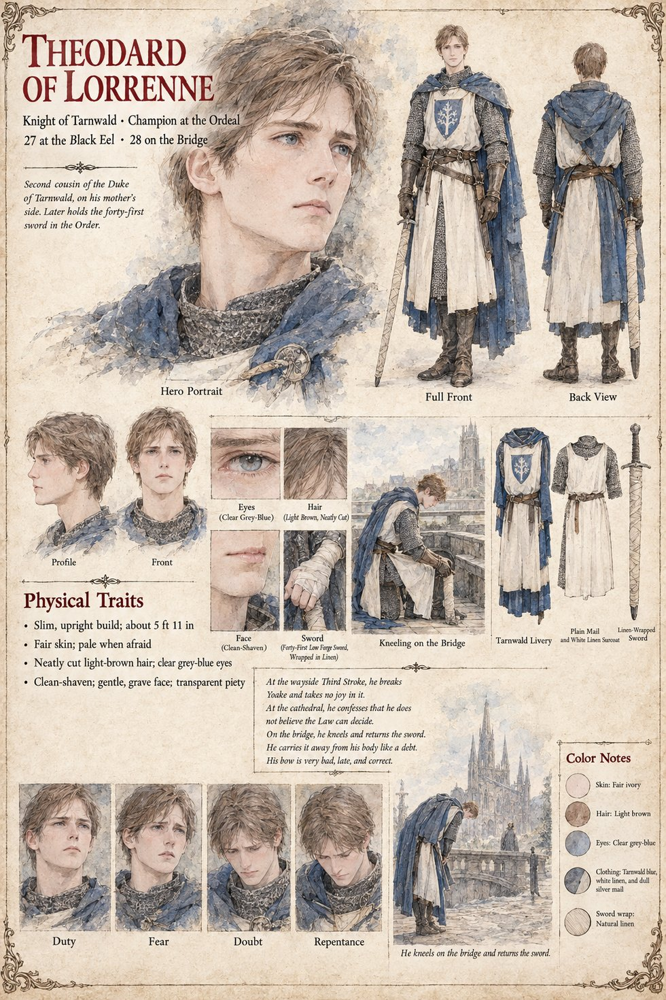

Theodard of Lorrenne
Knight of Tarnwald · champion at the Ordeal · later holds the forty-first sword of the Order · 27 at the Black Eel, 28 on the Bridge
A slim, upright, fair knight of Tarnwald, second cousin of the Duke of Tarnwald on his mother's side, who is champion at the Ordeal. His sheet tells his whole story in six short lines. At the wayside Third Stroke he breaks Yoake and takes no joy in it. At the cathedral he confesses that he does not believe the Law can decide. On the bridge he kneels and returns the sword. He carries it away from his body like a debt. His bow is very bad, late and correct. Yoake is Higaide's long curved sword, broken in Chapter 8 at the wayside Third Stroke at which the Landing's Priest sits as judge and declares Higaide's oath forsworn. The sheet draws his own sword as a Low Forge blade, the forty-first, wrapped in linen, and notes that he later holds the forty-first sword in the Order; the Order is presumably the Order of the Hundred and Forty-Four, whose Charter Ricbert drafts for a hundred and forty-four knights, one sword to each.
The Ordeal is the one at which Rothari presides and which Chlodio's Clause decides, and Theodard is the Duke's champion there: the publication notes have him cross blades thirteen times with Ebbo of Eschwin, the Countess's champion (Chapter 13); the Black Eel is the name on the inn sign in Ragnulf's yard. His expression panels run Duty, Fear, Doubt and Repentance, and his closing caption is He kneels on the bridge and returns the sword. Written from the sheet, from what the other Case 4181 pages already say, and from the character notes in the case's publication-prep file; the manuscript itself was not to hand. His age (27 at the Black Eel, 28 on the Bridge), slim build of about 5 ft 11 in, fair skin that goes pale when he is afraid, neatly cut light-brown hair, clear grey-blue eyes, clean-shaven face, plain mail, white linen surcoat with a white tree on a blue shield and blue Tarnwald cloak are the sheet's own.